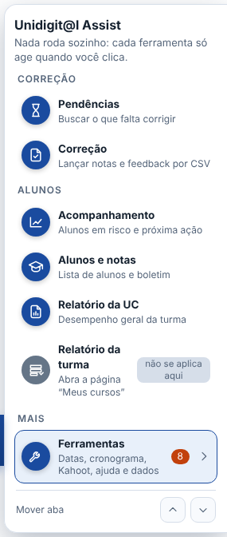

Ideia: o menu mostra só o que vale para a página em que você está, sem descrições nem rótulos de grupo, e o que é de apoio (ajuda, dados, compatibilidade) vai para uma engrenagem. Hoje são 15 entradas; na proposta aparecem no máximo 4 por vez.
